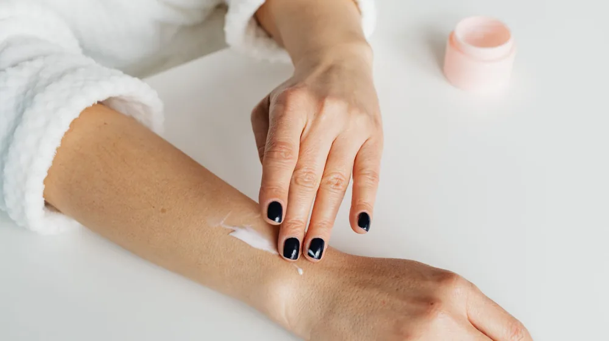

겨울철 피부 건조, 이 3가지 성분부터 확인! 완벽 보습템 고르는 법 비교
사진: https://kaboompics.com/ / Pexels (무료 이미지, 출처 표기)
겨울철 피부 건조, 왜 더 심해질까요?

매년 겨울이 찾아오면 갑자기 피부가 건조해지고 가려움증을 호소하는 분들이 많습니다. 이는 낮은 기온과 건조한 공기, 실내 난방으로 인한 복합적인 요인 때문입니다. 차가운 바람은 피부 표면의 수분 증발을 가속화하고, 실내 난방은 공기를 더욱 건조하게 만들어 피부 보호막을 약화시키기 때문입니다. 피부 장벽이 무너지면 수분 손실은 더욱 심해지고, 작은 자극에도 쉽게 예민해질 수 있습니다.
이러한 악순환을 끊기 위해서는 피부의 수분 손실을 막고 장벽을 튼튼하게 유지해줄 수 있는 보습 제품 선택이 중요합니다. 단순히 '촉촉하다'는 느낌보다는 내 피부에 맞는 성분을 정확히 알고 사용하는 것이 효과적인 겨울철 피부 관리의 시작입니다.
보습 성분, 핵심은 이 3가지입니다
보습제는 크게 세 가지 종류의 성분으로 구성됩니다. 각 성분이 피부에 작용하는 방식이 다르므로, 이들의 특징을 이해하면 나에게 맞는 보습제를 선택하는 데 큰 도움이 됩니다.
- 습윤제(Humectants): 공기 중 수분을 끌어당겨 피부에 공급합니다. 대표적인 성분으로는 히알루론산, 글리세린, 부틸렌글라이콜 등이 있습니다. 특히 히알루론산은 자기 무게의 수백 배에 달하는 수분을 저장할 수 있어 피부 속 깊이 수분을 채워주는 데 효과적입니다.
- 연화제(Emollients): 피부 장벽의 빈틈을 메워 피부결을 부드럽게 하고 유연성을 높입니다. 세라마이드, 콜레스테롤, 스쿠알란, 지방산 등이 대표적입니다. 이들은 피부 본연의 장벽 구성 성분과 유사하여 피부 친화적이며, 손상된 피부 장벽을 회복시키는 데 도움을 줍니다.
- 밀폐제(Occlusives): 피부 표면에 보호막을 형성하여 수분 증발을 차단합니다. 바셀린, 미네랄 오일, 시어버터, 라놀린 등이 여기에 속합니다. 이들은 수분이 날아가는 것을 물리적으로 막아 피부를 오랫동안 촉촉하게 유지시켜 줍니다. 특히 건조함이 심한 부위에 효과적입니다.
내 피부 타입별 보습제 선택 가이드
같은 건성 피부라도 개인의 특징에 따라 필요한 보습 성분이 다릅니다. 내 피부 타입에 맞춰 보습제를 선택하는 것이 중요합니다.
- 수분 부족형 지성 피부: 겉은 번들거리지만 속은 당기는 타입입니다. 유분감이 적고 수분 공급에 집중하는 습윤제 위주의 젤 타입이나 가벼운 로션을 선택하세요. 히알루론산, 글리세린 성분이 함유된 제품이 좋습니다.
- 건성 및 중성 피부: 적절한 유수분 밸런스를 유지해야 합니다. 습윤제와 연화제가 균형 있게 함유된 크림 또는 에멀전 형태가 적합합니다. 세라마이드, 스쿠알란 등 피부 장벽 강화 성분도 함께 확인하세요.
- 극건성 및 민감성 피부: 피부 장벽이 많이 손상되어 있어 자극에 취약하고 건조함이 심한 타입입니다. 습윤제, 연화제는 물론 밀폐제 성분까지 포함된 고보습 크림, 밤(Balm) 타입을 추천합니다. 시어버터, 바셀린 성분으로 피부 보호막을 형성해주는 것이 효과적입니다.
효과적인 보습 관리 루틴: 바르는 순서와 팁
아무리 좋은 보습제도 올바르게 사용하지 않으면 효과를 보기 어렵습니다. 다음 루틴을 참고하여 겨울철 피부 관리에 적용해 보세요.
- 세안 직후 3분 골든 타임: 세안 후 물기가 마르기 전에 보습제를 발라야 피부에 수분을 가두는 데 가장 효과적입니다. 스킨-에센스-로션-크림 순서로 제품을 바르되, 각 단계 사이에 충분히 흡수될 시간을 주세요.
- 레이어링 기법 활용: 건조함이 심할 때는 가벼운 제형의 보습제를 먼저 바르고, 그 위에 좀 더 리치한 크림이나 밤 타입을 덧바르는 '레이어링'이 좋습니다. 예를 들어, 히알루론산 세럼 후 세라마이드 크림, 마지막으로 시어버터 밤을 바르는 식입니다.
- 자기 전 충분한 양 도포: 밤사이 피부는 재생 활동을 하며 수분을 많이 소모합니다. 잠들기 전에 평소보다 넉넉한 양의 보습제를 발라주면 아침까지 촉촉함을 유지하는 데 도움이 됩니다.
이 외에도 실내 습도를 50~60%로 유지해주는 가습기 사용, 미지근한 물로 짧게 샤워하기, 충분한 수분 섭취도 피부 건조 완화에 큰 도움이 됩니다.
주의할 점: 피해야 할 성분과 잘못된 관리
건조한 피부를 관리할 때 효과적인 성분을 선택하는 것만큼 피해야 할 성분과 잘못된 습관을 아는 것도 중요합니다.
- 알코올, 강한 향료 피하기: 알코올 성분은 일시적으로 시원함을 주지만, 피부의 수분을 증발시켜 건조함을 악화시킬 수 있습니다. 강한 인공 향료 또한 민감한 피부에 자극을 줄 수 있으므로 성분 목록에서 확인하고 피하는 것이 좋습니다.
- 과도한 각질 제거 자제: 건조하다고 해서 각질을 무리하게 제거하면 피부 장벽이 더욱 손상되어 민감해지고 건조해질 수 있습니다. 겨울철에는 물리적 스크럽보다는 효소 세안제 등 저자극 각질 케어 제품을 사용하고, 주 1회 정도로 횟수를 줄이는 것이 현명합니다.
- 뜨거운 물 세안/샤워: 뜨거운 물은 피부 표면의 유분을 과도하게 제거하여 건조함을 유발합니다. 미지근한 물로 짧게 세안하고 샤워하는 습관을 들이세요.
이 정보는 일반적인 피부 관리 가이드라인이며, 특정 피부 질환이 있다면 반드시 피부과 전문의와 상담하여 맞춤형 관리를 받는 것을 권장합니다.
🔗 이 글도 함께 보면 좋아요: 전통주 선물세트, 실패 없이 고르는 법: 후기부터 주의사항까지 완벽 정리
관련 추천 상품
겨울 보습제, 건성 피부 크림, 고보습 로션 관련 인기 상품 보러가기
이 포스팅은 쿠팡 파트너스 활동의 일환으로, 이에 따른 일정액의 수수료를 제공받습니다.